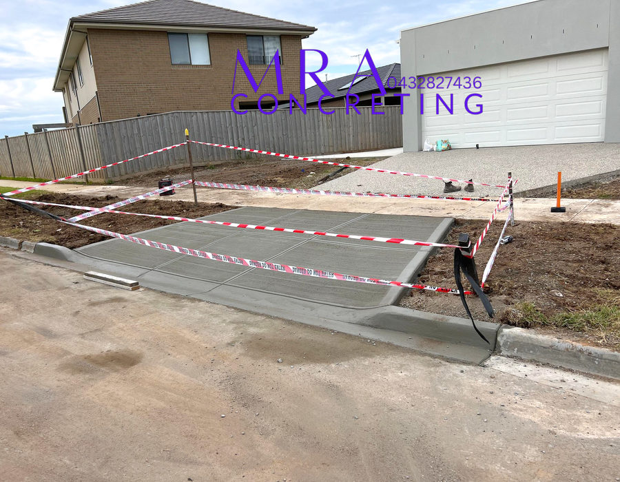

Melbourne
MRA Concreting services all areas of Melbourne including the western and northern suburbs.
Service Areas
We service all areas of Melbourne including the western and northern suburbs.
Where We Work
MRA Concreting services all areas of Melbourne including the western and northern suburbs.
We offer council repairs however big or small in most areas of Victoria. We handle the permits required and ensure the repairs are done as smoothly as possible.

Council Repairs
Services include reinstatement of naturestrips, crossover removal/extensions, footpath bay repairs, kerb and channel repairs.
Get in touch today